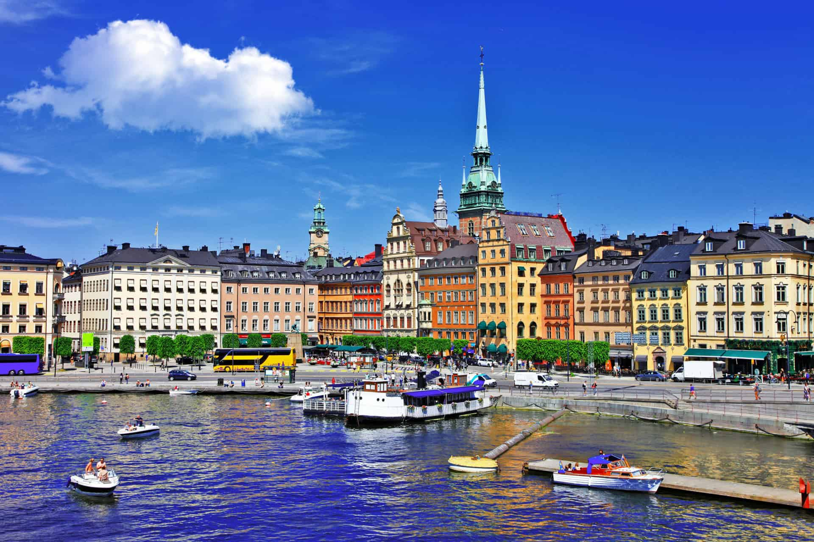

Capital : Stockholm
Population (2018) : 10 millions
Form of the State: Constitutional Monarchy
King: Charles XVI Gustave
Ministre: Ulf Kristersson
Parliament: Riksdag
Official languages: Suédois
Cash : Euro
Sweden has a border with Norway to the west-northwest and another with Finland to the north-northeast. To the south, Sweden is separated from Denmark by the Øresund, a strait in the Cattégat whose narrowest section is 4 km wide. The northern part of Sweden is occupied by Lapland, called Sápmi by its inhabitants, the Sami, who were the first inhabitants of northern Scandinavia.
The Sweden has the largest scale model of the solar system in the world: the Swedish solar system stretches across the entire Sweden along the Baltic Sea from Stockholm, where the Sun is located, to Kiruna, where the terminal shock is located. The Sun is represented in Stockholm by the Ericsson Globe, which is the largest spherical building in the world.
